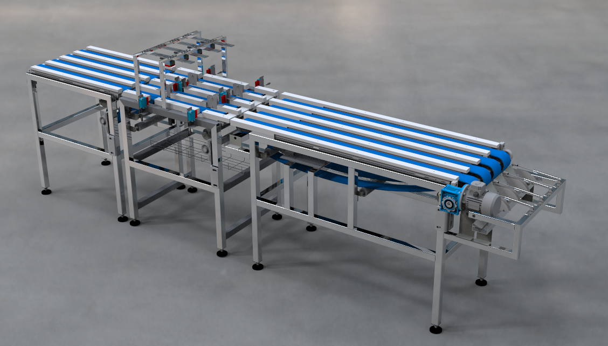
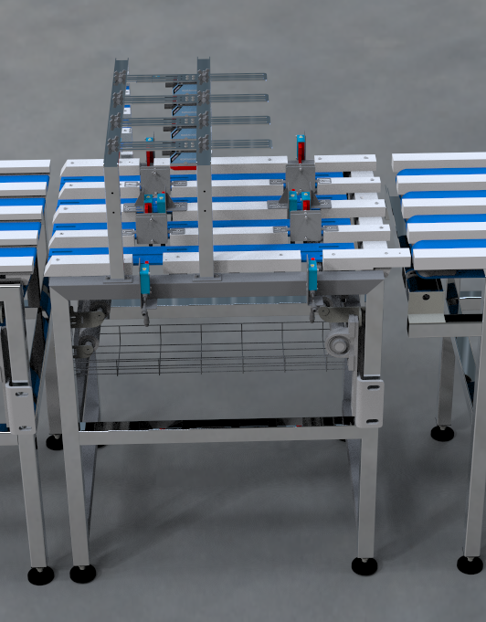
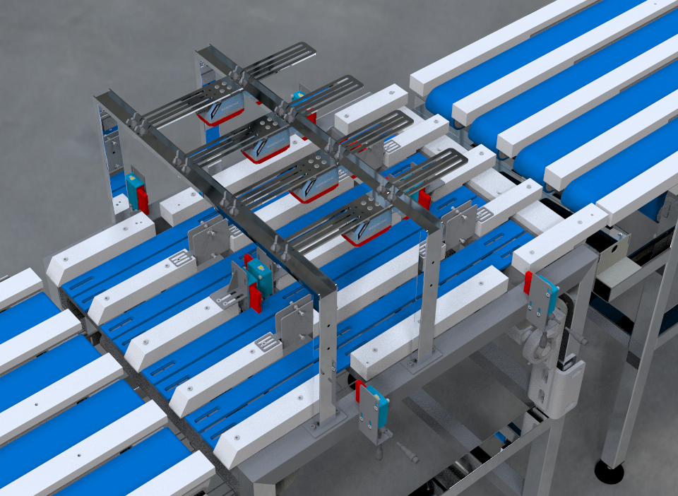
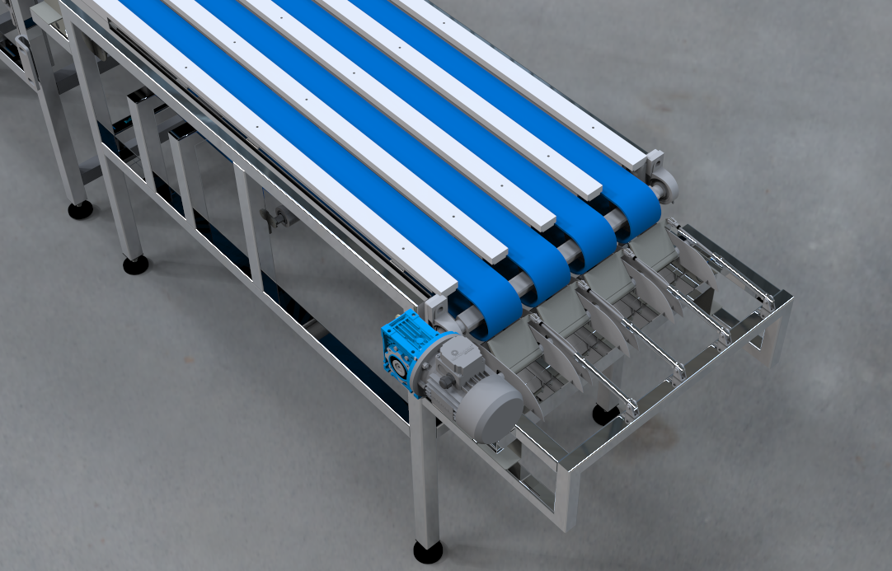

6. Sistema mecatrónico de separación#
Resumen
El sistema de clasificación automática desarrollado en el marco del proyecto FLATCLASS constituye un subsistema mecatrónico orientado a la automatización inteligente del manejo y selección de alevines de lenguado (Solea senegalensis) en entornos de hatchery. Su diseño integra tres módulos funcionales —captación de individuos, visión artificial y clasificación mecánica— coordinados mediante una arquitectura de control híbrida basada en PLC y entorno Node-RED, con comunicaciones industriales OPC-UA y MQTT para garantizar interoperabilidad y trazabilidad. La solución asegura una manipulación cuidadosa, clasificación fiable en tres categorías de tamaño y un funcionamiento continuo bajo condiciones de humedad controlada, posicionando a FLATCLASS como un avance significativo hacia la acuicultura 4.0, donde la integración de visión artificial, control inteligente y diseño higiénico optimiza eficiencia, sostenibilidad y bienestar animal.
Entregable: E4.1
Versión: 1.0
Autor: Javier Álvarez Osuna
Email: javier.osuna@fishfarmfeeder.com
ORCID: 0000-0001-7063-1279
Licencia: CC-BY-4.0
Código proyecto: IG408M.2025.000.000072
6.1. Descripción funcional#
El sistema de clasificación automática de lenguados constituye una línea mecatrónica modular diseñada para la manipulación controlada, inspección óptica y segregación de alevines en función de su tamaño corporal. Su concepción responde a los requisitos de precisión, trazabilidad y bienestar animal exigidos en la acuicultura moderna, integrando en un mismo conjunto tecnologías de transporte mecánico, visión artificial, control neumático y comunicación industrial avanzada. La arquitectura se compone de tres módulos principales: captación, visión artificial y clasificación. El bastidor estructural, visible en las imágenes, está fabricado íntegramente en acero inoxidable AISI 316L, material seleccionado por su resistencia a la corrosión en entornos húmedos y su cumplimiento con los criterios de diseño higiénico establecidos por la European Hygienic Engineering and Design Group (EHEDG). Los elementos de guiado y soporte de las bandas transportadoras incluyen piezas en polipropileno técnico, cuya función es asegurar la planitud de las cintas, reducir fricción y amortiguar vibraciones durante el transporte de los peces.
{kind=link}

Figura 6.1 Sistema mecatrónico de clasificación#
6.1.1. Módulo de captación#
El primer módulo, correspondiente a la introducción individual de los alevines, garantiza que cada ejemplar entre en la línea de clasificación de forma ordenada, evitando solapamientos o interferencias en la zona de inspección. Este módulo emplea una cinta de velocidad controlada que sincroniza su movimiento con el inicio de la secuencia de visión, detectando el paso del pez mediante un conjunto de barreras láser posicionadas transversalmente. La función de estas barreras es tanto de control de flujo como de activación de eventos en el sistema de visión y en la lógica del PLC.
6.1.2. Módulo de visión artificial#
El segundo módulo alberga el sistema de visión artificial. Cada canal de transporte —cuatro en total— dispone de una cámara cenital montada en una estructura superior de acero inoxidable, visible en las imágenes Figura 6.2 y Figura 6.3. Estas cámaras están equipadas con iluminación LED puntual tipo flash, que se activa en el instante preciso en que el pez atraviesa la zona de digitalización. La iluminación puntual garantiza un alto contraste y una eliminación efectiva de sombras, optimizando la segmentación morfológica y la extracción de características de longitud, anchura y área proyectada.
{kind=link}

Figura 6.2 Detalle del módulo de visión artificial (vista lateral)#
{kind=link}

Figura 6.3 Detalle del módulo de visión artificial (vista superior)#
El conjunto de cámaras está calibrado con precisión para operar en sincronía con las barreras láser de entrada y salida, generando una ventana temporal de adquisición definida por un tiempo de tránsito fijo. Este enfoque evita la necesidad de codificadores incrementales y simplifica el control, asegurando la repetitividad en condiciones de velocidad constante de cinta. El procesamiento de imágenes se realiza mediante software de visión conectado al PLC a través de los protocolos OPC-UA y MQTT, garantizando interoperabilidad y comunicación estandarizada con otros sistemas de supervisión industrial.
6.1.3. Módulo de clasificación#
El último de los módulos es el responsable de dirigir el pez hacia el contenedor adecuado según su tamaño. Para eso se basa en un sistema de transporte por cinta de recorrido variable. Su principio de funcionamiento se basa en la traslación controlada de uno o varios rodillos tensores mediante actuadores lineales, lo que permite alterar la geometría del bucle cerrado de la cinta sin detener el movimiento. Este diseño proporciona una transformación dinámica de la trayectoria con precisión milimétrica, garantizando que la superficie activa de transporte pueda adaptarse en tiempo real a las condiciones de clasificación. La sincronización entre la variación geométrica del sistema tensor y el control del servomotor asegura que la tensión en la banda se mantenga constante durante toda la maniobra, evitando deslizamientos, torsiones o pandeos en la cinta. Este enfoque permite que el módulo alcance posiciones predefinidas en función del tamaño del pez, manteniendo un equilibrio entre suavidad de movimiento, tiempo de respuesta y estabilidad mecánica del conjunto.
Los actuadores, de tipo pistón mecánico lineal, permiten modificar la tensión y el ángulo de ataque de los rodillos de retorno, alterando de forma controlada la longitud total del trayecto de transporte. Cuando la orden de clasificación corresponde a peces medianos, la cinta opera en su configuración corta, de modo que los ejemplares son liberados en el primer tanque receptor. En cambio, para peces pequeños o grandes, los actuadores prolongan el recorrido hasta la zona terminal, donde se encuentran las clapetas neumáticas encargadas de la separación final.
El sistema de clapetas, visible en detalle en la parte final del módulo (imagen Figura 6.4), está accionado por cilindros neumáticos de doble efecto, que permiten una conmutación precisa y rápida entre posiciones. Cada clapeta se gobierna mediante válvulas distribuidas controladas por el PLC, y su función es dirigir la caída del pez hacia uno de los tanques de destino. De este modo, los peces pequeños caen en el primer tanque de recepción y los grandes en el último, completando así el proceso de clasificación.
{kind=link}

Figura 6.4 Detalle del sistema de clapetas#
El subsistema neumático incorpora electroválvulas, reguladores de presión y elementos de seguridad conforme a la norma ISO 4414:2010, garantizando un funcionamiento seguro incluso en caso de pérdida de alimentación eléctrica o presión insuficiente. El diseño del circuito incluye una posición de seguridad que bloquea el movimiento de las clapetas en caso de fallo, evitando caídas indeseadas o mezclas de categorías. El accionamiento de las cintas transportadoras está confiado a un motor eléctrico trifásico acoplado a un reductor de velocidad de precisión, complementado con un servomotor para el control de posición variable y ajuste fino de sincronización. Este conjunto de accionamiento permite mantener una velocidad constante de transporte durante la operación normal, pero posibilita pequeñas correcciones dinámicas en los periodos de calibración o mantenimiento. El par de salida se transmite mediante un sistema de rodillos motrices y tensores que aseguran una tracción uniforme a lo largo de cada canal.
6.1.4. Control#
Desde el punto de vista del control, la arquitectura del sistema combina un PLC Rockwell Automation como núcleo de control de tiempo real con una capa de supervisión y lógica avanzada implementada en Node-RED. Esta integración permite gestionar simultáneamente señales digitales (barreras, actuadores, válvulas) y flujos de datos de alto nivel (mensajes OPC-UA/MQTT). La arquitectura híbrida facilita la trazabilidad de los eventos, la monitorización remota y la futura integración con sistemas de inteligencia artificial para la optimización adaptativa de parámetros operativos. El sistema de control dispone de un cuadro eléctrico central ubicado en la parte lateral del bastidor, que integra los componentes de potencia, mando y protección conforme a la norma IEC 60204-1:2018. Incluye relés de seguridad, disyuntores magnetotérmicos, contactores y fuentes de alimentación estabilizadas, además de un panel táctil HMI que permite al operario visualizar el estado de los módulos, modificar parámetros y ejecutar rutinas de diagnóstico.
Todos los elementos están montados en envolventes IP67 para resistir ambientes húmedos y procesos de limpieza. El diseño del sistema cumple con los requisitos de seguridad establecidos en ISO 12100:2010 para la evaluación de riesgos y en ISO 13849-1:2015 para la fiabilidad de los sistemas de control relacionados con la seguridad. Los paros de emergencia están ubicados estratégicamente en ambos extremos del conjunto, y las zonas móviles están protegidas por carenados y cubiertas extraíbles que impiden el acceso accidental a los mecanismos en movimiento durante la operación.
Desde el punto de vista higiénico, las cintas transportadoras están fabricadas con materiales de grado alimentario y presentan una superficie lisa, continua y sin retenciones de materia orgánica. El sistema incorpora aspersores de agua nebulizada que mantienen la humedad superficial de la cinta y de los peces durante el proceso de clasificación. Este mecanismo contribuye a reducir el estrés de los alevines y a evitar desplazamientos no controlados, al tiempo que facilita la limpieza automatizada posterior al turno de trabajo.
La disposición de los cuatro canales paralelos permite procesar simultáneamente varios ejemplares, incrementando la capacidad de la línea sin comprometer la precisión individual. Cada canal opera de forma autónoma en términos de visión y clasificación, pero coordinada en tiempo mediante la lógica central del PLC, que gestiona las señales de entrada/salida de cada módulo. Este diseño modular facilita el mantenimiento, ya que cada canal puede aislarse y operar en modo manual sin detener el conjunto completo.
El principio de funcionamiento basado en tiempo de tránsito fijo y detección por barreras láser constituye una solución robusta y de baja latencia. Dado que la velocidad de la cinta es constante, el sistema puede predecir con alta precisión el momento exacto en que cada pez alcanzará la zona de clasificación, activando los actuadores en la secuencia adecuada. Esta sincronización minimiza errores y elimina la necesidad de sensores adicionales de posición, reduciendo complejidad y coste.
Las imágenes de la máquina muestran con claridad la ergonomía del diseño, la disposición simétrica de los actuadores y la accesibilidad a los componentes de mantenimiento. La altura de trabajo está optimizada para el operario, y el bastidor permite el paso inferior de conducciones neumáticas y eléctricas, evitando interferencias con el flujo de peces o con las operaciones de limpieza industrial.
Desde una perspectiva energética, el sistema se ha optimizado para un consumo reducido mediante el uso de servomotores de alta eficiencia y un control neumático proporcional. Además, la estructura modular permite la sustitución de elementos de transporte sin necesidad de desmontar el bastidor principal, reduciendo tiempos de inactividad y facilitando la escalabilidad futura del sistema.
En términos de integración industrial, el sistema puede comunicarse con plataformas superiores de gestión de producción o trazabilidad a través de los protocolos OPC-UA y MQTT. Esto permite registrar en tiempo real los conteos por categoría, el rendimiento de cada canal, y las alarmas de mantenimiento, posibilitando su conexión con sistemas MES o SCADA de planta.
Finalmente, el diseño incorpora una lógica abierta para futuras mejoras basadas en inteligencia artificial. La arquitectura de control actual puede admitir módulos de análisis predictivo que optimicen la velocidad de clasificación, ajusten los umbrales de tamaño o detecten automáticamente desviaciones en el flujo de peces. Con ello, el sistema se posiciona como una solución avanzada, escalable y alineada con la digitalización de la acuicultura 4.0.
6.2. Normativa aplicada y referencias técnicas#
ISO 12100:2010 – Seguridad de las máquinas. Principios generales de diseño y evaluación del riesgo.
ISO 13849-1:2015 – Partes de sistemas de control relacionadas con la seguridad.
ISO 4414:2010 – Sistemas neumáticos. Reglas generales y requisitos de seguridad.
IEC 60204-1:2018 – Equipos eléctricos de las máquinas.
EHEDG Guidelines – Diseño higiénico de equipos en la industria alimentaria.